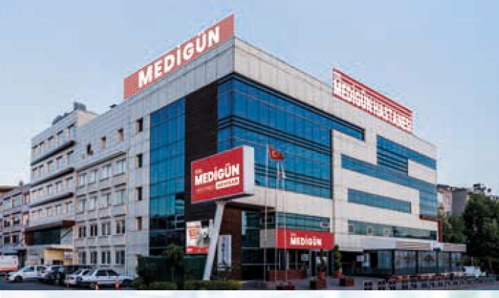
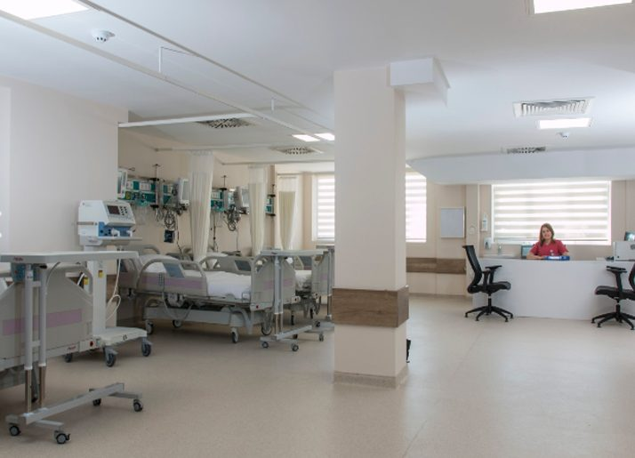
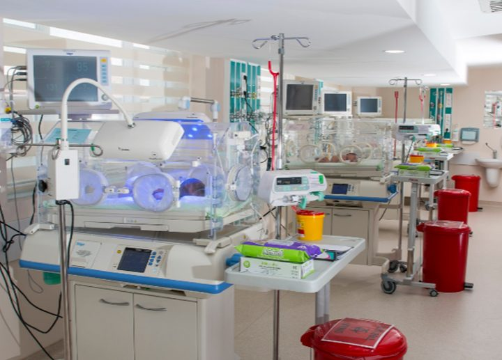
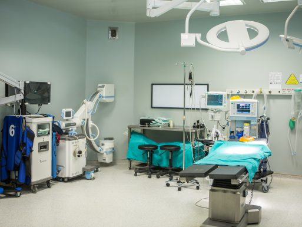
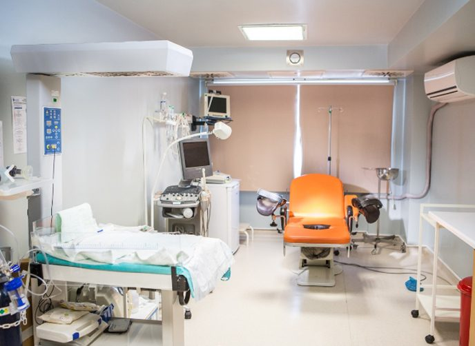

Randevudan sonuca, her adımda yanınızdayız.
Akhisar, Soma, Bergama, Bornova ve Çamdibi'deki Medigün kurumlarına tek yerden ulaşın: hekim ve branş arayın, randevu talebi bırakın, tahlil sonucunuzun hazır olduğunu öğrenin.

Size yakın Medigün kurumu
Adres, telefon ve yol tarifi. Bir şubeyi seçtiğinizde sayfadaki hekim listesi ve randevu asistanı o şubeye göre açılır.
Göğüs ağrısı, nefes darlığı, bilinç kaybı, felç belirtisi ya da ağır kanamada 112'yi arayın.
112'yi araAradığınız bölümü ve hekimi bulun
Ad, soyad ya da bölüm adıyla arayın; Türkçe karakter yazmasanız da bulur. Liste alfabetiktir.
Hekim ve branş bilgileri Medigün Akhisar ve Soma'nın resmî internet sitelerinden 14.10.2026'da derlenmiştir; yalnız branşı sayfada yazılı olan hekimler gösterilir. Bergama, Bornova ve Çamdibi'deki hekim kadrosu için çağrı merkezi: 0850 260 1 222.
Gece yarısı da randevu talebi bırakılabilsin
Çağrı merkezi kapalıyken hasta WhatsApp'a benzeyen bu sohbetle şubeyi ve bölümü seçer; SGK ile muayene için MHRS'ye yönlendirilir ya da özel randevu talebi bırakır. Talep sabah çağrı merkezinin ekranına düşer.
- Acil durumu tanır. "Göğsüm ağrıyor", "nefes alamıyorum" gibi ifadelerde sohbeti durdurur, 112'yi öne çıkarır.
- Teşhis koymaz, hekim önermez. Bölümü hasta seçer; asistan yalnız yol gösterir.
- MHRS ve özel randevu ayrımı. SGK'lı muayene için Alo 182 ve mhrs.gov.tr bağlantısı; özel randevu için talep formu.
- KVKK onayı olmadan kişisel bilgi istemez. Bu demoda hiçbir bilgi gönderilmez ya da saklanmaz.
Yayında aynı akış hastanenin WhatsApp Business hattında ve sitede çalışır. Asistan yalnız randevu ve yönlendirme yapar, sağlık bilgilendirmesi yapmaz; acil uyarısı dahil tüm yanıt metinlerini hastanenin yetkili hekimi onaylar.
"Sonucum çıktı mı?" diye aramaya gerek kalmasın
Laboratuvar sonucu onaylandığında hasta, kayıtta izin verdiği kanaldan kısa bir bildirim alır. Mesajda sonuç ya da teşhis yazmaz; sonuç yalnız güvenli girişten sonra görülür. Aşağıdaki ekranlar maket; gerçek veri yoktur.
- Bildirim
- Güvenli giriş
- Sonuç listesi
Bu akış hastaya ve hastaneye ne kazandırır?
- Hasta sonucunu beklerken defalarca aramaz; çağrı merkezi hattı randevu için açık kalır.
- Kimlik + tek kullanımlık kodla giriş; bildirim mesajında sağlık bilgisi yok (KVKK, Kişisel Sağlık Verileri Yönetmeliği).
- "Hekim değerlendirmesi bekleniyor" durumu, hastanın sonucu tek başına yorumlamasının önüne geçer.
- Bildirim yalnız hizmet bilgisidir; tanıtım içermez, yalnız izin veren hastaya gider.
Yayında hastanenin laboratuvar bilgi sistemine bağlanır.
Check-up'ta neler yapılır?
Aşağıdaki listeler genel bilgilendirme içindir. Hangi tetkiklerin gerekli olduğuna yaşınız, öykünüz ve şikâyetlerinize göre hekim karar verir. Örnek içerik
Yer tutucu metin. Yayında paket içerikleri ve tüm sağlık bilgilendirme metinleri Medigün'ün yetkili hekimi tarafından hazırlanır ve onaylanır (Yönetmelik md. 5/1-b); Dijitabela yalnız teknik altyapıyı kurar. Bilgi almak için çağrı merkezini arayabilir ya da randevu asistanına yazabilirsiniz.
Yoğun bakımdan doğumhaneye
Medigün Akhisar'ın birimlerinden fotoğraflar. Soma'da dahili ve cerrahi yoğun bakım, koroner yoğun bakım ve yenidoğan yoğun bakım servisleri bulunmaktadır.

Erişkin yoğun bakımMedigün Akhisar 
Yenidoğan yoğun bakımMedigün Akhisar 
AmeliyathaneMedigün Akhisar 
DoğumhaneMedigün Akhisar